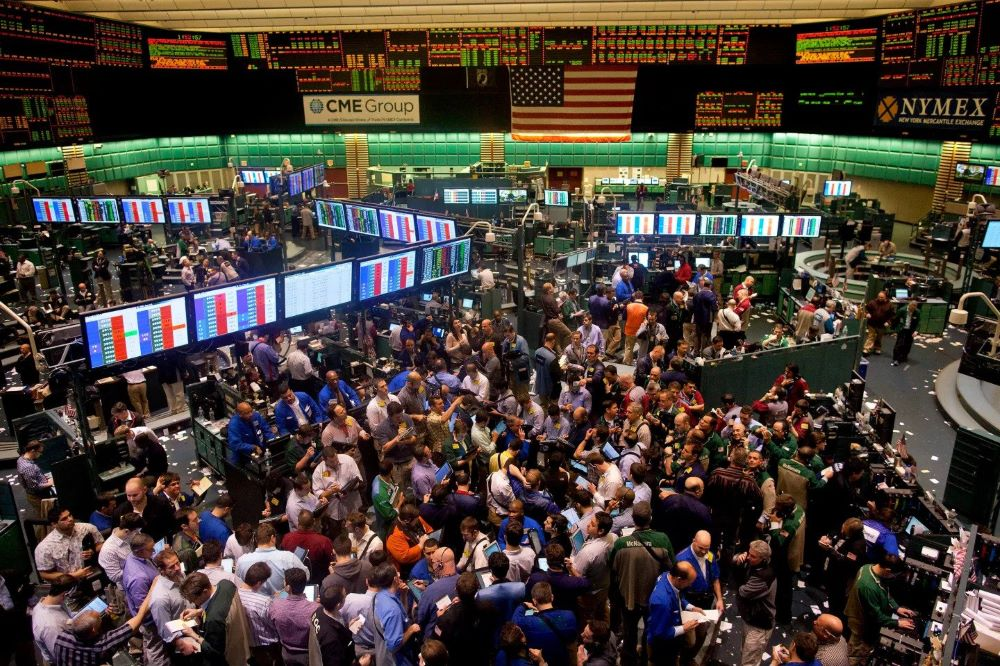

What are the different trading instruments?
Stocks
Stocks, shares or equity are a type of security that signifies a fractional ownership of a particular company or corporation. Most stocks are publicly listed on exchanges such as the
New York Stock Exchange (NYSE)
or
National Association of Securities Dealers Automated Quotations (NASDAQ),
which notably are the 2 largest stock exchanges in the world by total market capitalization of listed companies. Some stocks also pay out regular dividends (usually once a quarter) which are a distribution of the underlying companies profits.
At the time of writing, the top 5 largest publicly traded company by market capitalization are
Apple Inc.
(AAPL),
Microsoft Corp.
(MSFT),
Saudi Aramco
(2222.SR),
Alphabet Inc.
(GOOGL),
Amazon
(AMZN),
respectively. The string of characters enclosed in parentheses are the stock's ticker/symbol which is used to uniquely identify a stock in an exchange.
Options
Options are a type of
financial derivative
that give the buyer the right but not the obligation to buy or sell an underlying security at a particular strike price on or before a specified date (dependent on the option's style).
Similar to stock, options may be traded via public exchanges or they can be transacted
OTC (over-the-counter).
Some common option types are the call option (buy) and the put option (sell). There also exist a myriad of options strategies, some examples include
covered call,
married put,
long straddle,
iron condor
and others.
The options contract can be targeted against a bunch of underlying assets, including but not limited to equity options, bond options, future options, index options and many others.
The pricing or
valuation models
is complex and has high mathematical rigor.
Due to their inherit volatility and more complex nature, it carries a lot higher risk than standard stock trading. It should only be executed by seasoned experts.
Futures

Similar to the above options, futures are also a type of financial derivative. However, one striking difference is that the buying or selling of the underlying asset is obligated to be performed at a specific future date and price unlike options.
They are normally traded using futures exchanges such as
CME Group
or
Intercontinental Exchange.
It can also be traded OTC.
Since these are highly leverage products (i.e. the trader does not need to fork up the full amount upfront, but insteads uses borrowed money, allowing higher leverage of one's liquid assets), it involves high risk.
ETFs
ETFs also known as Exchange-Traded Funds are investment funds that are traded on exchanges. Most track a particular stock, bond or commodities. They are generally similar to mutual funds, where the pooled sum of money is managed by fund managers.
They can be purchased and sold similar to that of stocks. Some ubiquitous ETFs include
QQQ,
SPY,
which track the
NASDAQ 100
and
S&P 500
indices respectively.
CFDs
CFDs also know as contract for difference are an agreement between two parties that they will cash-settle the difference between prices now and the stipulated time in the future. Whatever profit one side makes will be handed over by the losing end.
Since the both parties in the CFD contract do not actually own the underlying asset they can gain exposure to the risk and rewards of the asset without owning it. CFDs also typically allow for higher margin as compared to other alternatives.
Similar to the above few instruments, CFDs are also extremely risky and are only suitable for experts.
Bonds

Bonds are a type of security that is a contract between the borrower and the investor, with the borrower typically being large corporates or governments. The details of the bond include the specifics of the interest rates and payment dates.
Once the bond reaches maturity, the borrower will be required to return the full principal sum back to the investor.
Some examples of bonds issued by governments include,
Singapore Savings Bond (SSB),
US Treasury Bonds
and many other.
Funds
An investment fund is a pool of money that is typically managed by professional fund managers. An example of a type of fund include mutual funds, which are used to invest into a diverse portfolio of assets.
Another common type of funds are hedge funds which use liquid assets combined with more complex and diverse strategies in an attempt to improve performance and returns of their investment. The people that manage such funds are aptly named hedge fund managers.
Swaps
Swaps are yet another type of derivatives that is an agreement of 2 parties to exchange either financial instruments, cashflow some others. Most swaps are cash based.
A main difference to the above difference is that swaps are mainly OTC only. Retail investors do not engage in swaps.
Forex
Forex (Foreign Exchange/FX) are markets for trading currency pair and their derivatives. This is the most liquid market globally by total volume.
Currency pair are typically written like
USD/SGD
which means the United States Dollar (USD) against the Singapore Dollar (SGD), with the number representing the amount of SGD needed for 1 USD.
A commonly used term in forex trading is pip or pips which is abbreviated from percentage in point. They represent the fourth decimal place in a common currency pair. For example if the USD/SGD moves up by S$0.0001, we can say it rose by 1 pip.
Forward
Forwards are custom or non-standard contracts between 2 parties to engage in buying or selling at some point in the future. These are also OTC instruments. Forwards are unlike futures in that it allows more flexibility between parties, but with higher risk due to relatively lower regulation.